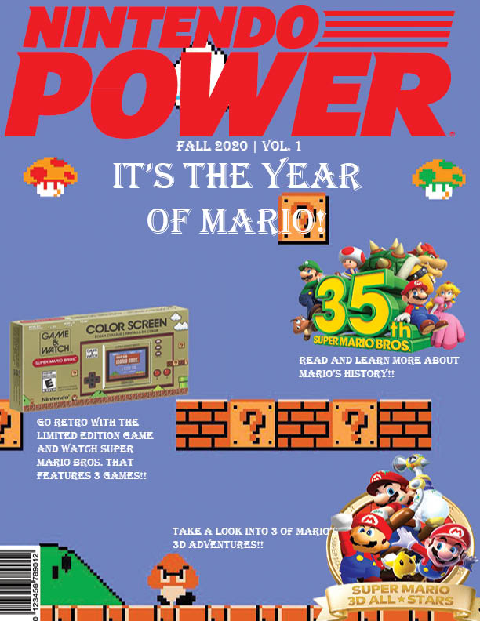
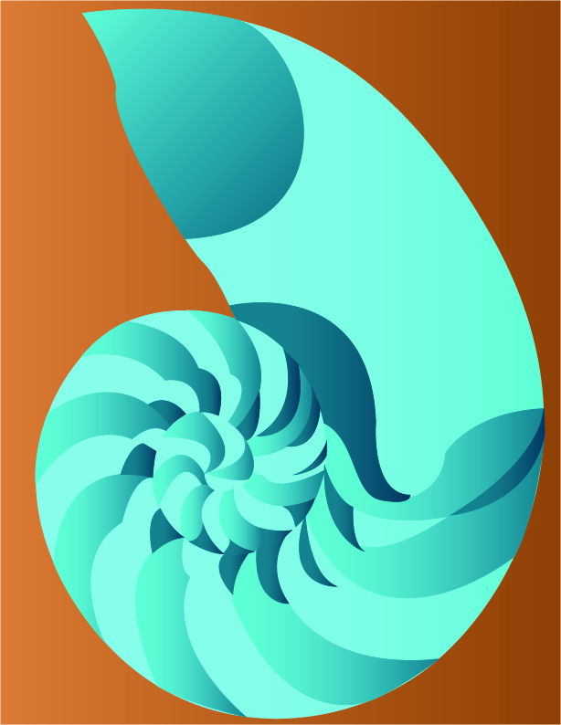
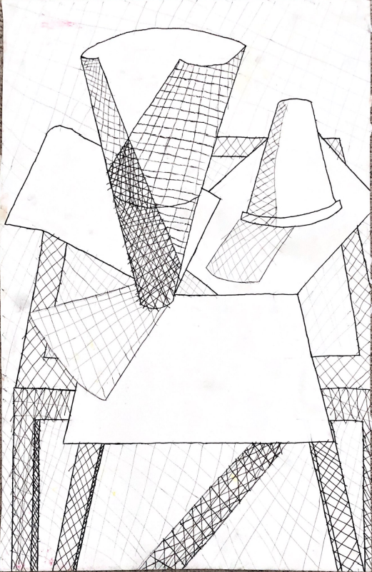

Portfolio
Game Design

Starbot Showdown
Arcade Game

Sniper Quest
First Person Shooter (FPS)

Nefarious Man
2D Platformer
Digital Art
Nintendo Power Magazine Mockup
Magazine Cover Design Mockup
Seashell Complementaryt
Using complementary colors for a shell

Our Dirty World
The polution we cause
Regular Art

The Computer Man
The programmers life

Self Portrait
Hand-drawn version of Daniel
Stand Still Life Portrait
Still life of a couple of papers and cups